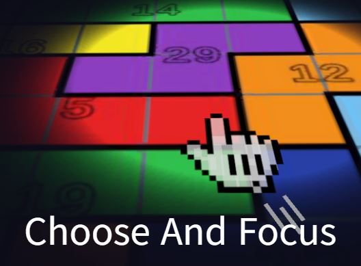

Choose And Focus
GMTK Game Jam 2026 출품작 · 수강신청 모티프 실시간 폴리오미노 퍼즐

수강신청을 모티프로 한 실시간 퍼즐. 필드를 빈틈없이 덮은 폴리오미노 조각이 각각 "정원"을 들고 있고, 정원이 0이 되면 마감되어 사라진다. 학점이 높은 색일수록 빨리 마감되므로 짧은 시간 안에 무엇을 잡을지와 인벤토리를 어떻게 채울지를 동시에 결정해야 한다.
Unity 6 · C# · WebGL 단일 씬. 라운드가 끝나면 인벤토리를 캡처해 LootLocker 리더보드에 점수와 함께 올린다.
기간 2026.07.23 ~ 07.27 (5일) · 팀 2인 · 담당 게임 로직 · 백엔드 · 빌드 파이프라인
List<Frame>을 스택으로 쓰는 비재귀 탐색. Frame이 struct라 in-place로 갱신된다. 분기 휴리스틱은 first-empty-cell — row-major 첫 빈칸을 반드시 덮는 후보만 생성해 진행을 보장한다(MRV는 쓰지 않았다)
그리디는 배치 개수마다 yield하지만, 솔버는 경과 시간 4ms마다 yield한다. 애초엔 두 경로가 같은 값을 썼는데, "프레임당 조각 수"로 튜닝된 값이 솔버에서 "프레임당 탐색 노드 수"로 재사용되고 있었다. 노드 개수로 양보하면 프레임당 실제 탐색량이 플레이어의 프레임레이트를 따라가고, 그러면 시간 예산 2,000ms가 "실제 탐색에 쓴 시간"을 뜻하지 않게 된다 — 느린 기기에서 솔버가 더 일찍 포기하고 다른 판이 나온다. 예산이 무엇을 재는 값인지 지키기 위해 솔버 쪽만 실경과 시간 기준으로 분리했다.
확률 가중이 아니라 정확한 개수를 담은 가방을 Fisher-Yates로 섞는 방식이라, 색별 개수 차이가 항상 1 이하로 보장된다. 30조각 ÷ 7색이면 5색은 4개, 2색은 5개. 확률 가중이면 한 판에서 특정 색이 몰려 점수 상한이 시드마다 크게 흔들리기 때문에 배제했다. (균등 제약은 색상 기준이며, 블록 종류에는 걸려 있지 않다.)
Uncaught exception from main loop → Halting program. 아무것도 렌더링되기 전에 사망. 에디터와 배치 빌드는 정상yield와 공존해야 해 재귀는 사용 불가. 조각 크기의 최대공약수가 필드 넓이를 나누지 못하면 탐색 없이 즉시 폴백, 탐색 예산 초과 시 그리디로 내려가 항상 종료yield가 난수를 소비하지 않도록 설계해 결정론도 유지OnApplicationQuit이 모든 OnDestroy보다 먼저 실행되는 것을 이용해 루트에서 차단overrideSorting. 씬의 sibling 순서에만 의존하면 이미 배치된 조각이나 그리드 배경이 드래그 중인 조각을 덮는다. overrideSorting은 부모 Canvas 아래일 때만 유효해 씬에 미리 구워둘 수 없었다TryPlaceInInventory/ReturnToField로 떼어내, 드래그 시뮬레이션 없이 배치 규칙만 단위 테스트할 수 있게 함ScoreManager.Compute가 ScriptableObject·씬 오브젝트에 의존하지 않아 EditMode에서 그대로 검증된다. 씬 상태 수집은 별도 경로로 분리